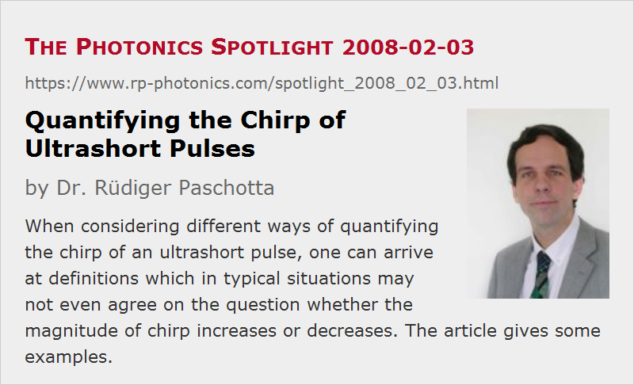

Quantifying the Chirp of Ultrashort Pulses
Posted on 2008-02-03 as a part of the Photonics Spotlight (available as e-mail newsletter!)
Permanent link: https://www.rp-photonics.com/spotlight_2008_02_03.html
Author: Dr. Rüdiger Paschotta, RP Photonics Consulting GmbH
Abstract: When considering different ways of quantifying the chirp of an ultrashort pulse, one can arrive at definitions which in typical situations may not even agree on the question whether the magnitude of chirp increases or decreases. The article gives some examples.

Ref.: encyclopedia articles on chirp and ultrashort pulses
The chirp of an ultrashort pulse is a concept which is relatively easy to grasp. Nevertheless, rather surprising issues arise when one tries to quantify such chirp. It turns out that different definitions of chirp lead to quantities which can not simply be converted into each other. Furthermore, such quantities may not even agree on the question whether the magnitude of chirp increases or decreases in certain situations!
The article on chirp gives two examples, which are discussed in some more detail here:
Effect of Chromatic Dispersion
Consider a situation where an initially unchirped (transform-limited) pulse experiences normal dispersion when propagating in a medium. Of course, one would expect this to lead to an increasing amount of chirp. It obviously does so, when the magnitude of chirp is considered to be the amount of anomalous dispersion required to recompress the pulse.
However, this is not the case for the rate of change of the instantaneous frequency, which is actually a rather natural definition for the magnitude of chirp. That kind of chirp first rises with increasing amount of dispersion, but then it decreases again. Why is that? Because the instantaneous frequency goes through an interval of finite width, and as the pulse becomes longer and longer, the rate of change (in Hz/s) decreases.
Effect of Kerr Nonlinearity
Here we consider an initially unchirped pulse which is subject to self-phase modulation (SPM) via a Kerr nonlinearity of some medium. SPM creates a chirp, and the rate of change of the instantaneous frequency will increase with increasing propagation length. However, the amount of dispersion as required for maximum compression will initially increase, but then decrease. The reason for that is that the pulse bandwidth is increasing, and broadband pulses are more sensitive to dispersive effects.
Conclusion
The conclusion of this insight is clear: be careful when considering the magnitude of chirp, as different definitions have very different meanings, and can not even be considered to quantify the same physical property.
This article is a posting of the Photonics Spotlight, authored by Dr. Rüdiger Paschotta. You may link to this page and cite it, because its location is permanent. See also the RP Photonics Encyclopedia.
Note that you can also receive the articles in the form of a newsletter or with an RSS feed.
Questions and Comments from Users
Here you can submit questions and comments. As far as they get accepted by the author, they will appear above this paragraph together with the author’s answer. The author will decide on acceptance based on certain criteria. Essentially, the issue must be of sufficiently broad interest.
Please do not enter personal data here; we would otherwise delete it soon. (See also our privacy declaration.) If you wish to receive personal feedback or consultancy from the author, please contact him e.g. via e-mail.
By submitting the information, you give your consent to the potential publication of your inputs on our website according to our rules. (If you later retract your consent, we will delete those inputs.) As your inputs are first reviewed by the author, they may be published with some delay.
|  |
If you like this page, please share the link with your friends and colleagues, e.g. via social media:
These sharing buttons are implemented in a privacy-friendly way!